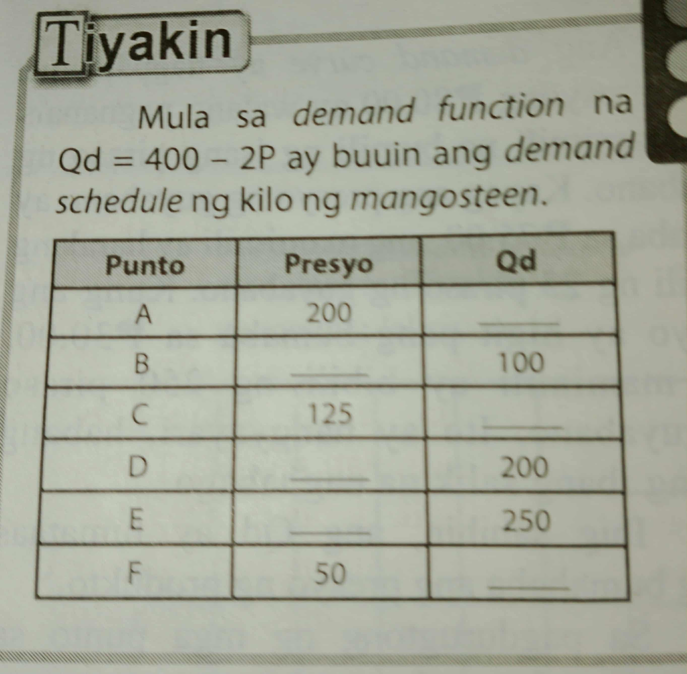
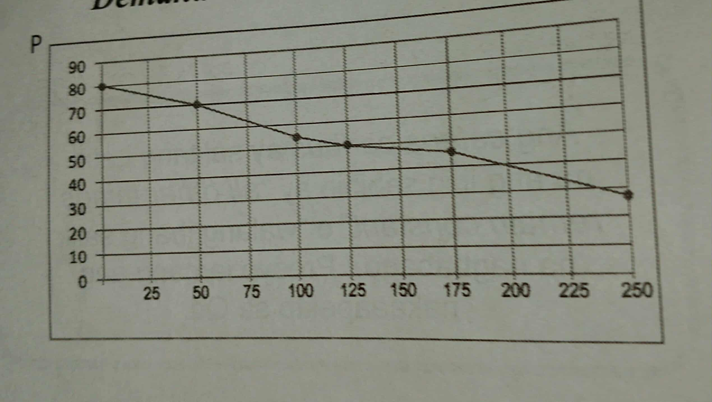

Ang Demand ay tumutukoy sa dami ng produkto at serbisyo na kaya at handing bilhin ng mga mamimili sa alternatibong presyo sa isang takdang panahon.Ang presyo ay malaking impluwensiya sa pagtatakda ng demand ng mga mamimili.Ang demand ay maitatakda kung ang mamimili ay may kakayahan o kagustuhan na bilhin ang isang produkto. KAGUSTUHAN + KAKAYAHAN = DEMAND
Ang dami ng produkto na handa at kayang bilhin ng maimili sa alternatibong presyo sa isang takdang panahon ay ipinakikita ng demand schedule. Ito ang talahanayan na nagpapakita ng demand ng mamimili katumbas ng presyo.
Sa pamamagitan ng mathematical equation ay maipapahayag ang ugnayan ng presyo at demand. Ito ang nagpapakita ng ugnayan ng dalawang variables, ang QD(quantity demanded) at P(Presyo). Ang Qd ay maaring tumaas o bumaba sa bawat pagbabago at pagtaas at pagbaba ng P. Isang halimbawa ng mathematical equation ay ito:
QD=400-5P
Ang ceteris paribus ay salitang latin na nangangahulugang "all other things remain constant" o walang ibang salik na nagbabago. Presyo lamang ang nakaaapekto sa Qd.
Ang demand curve ay isang grapikong paglalarawan ng di tuwirang relasyon presyo at dami ng demand.
 